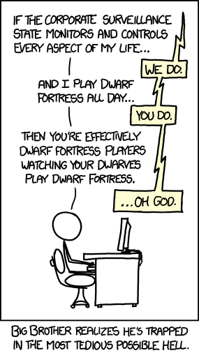
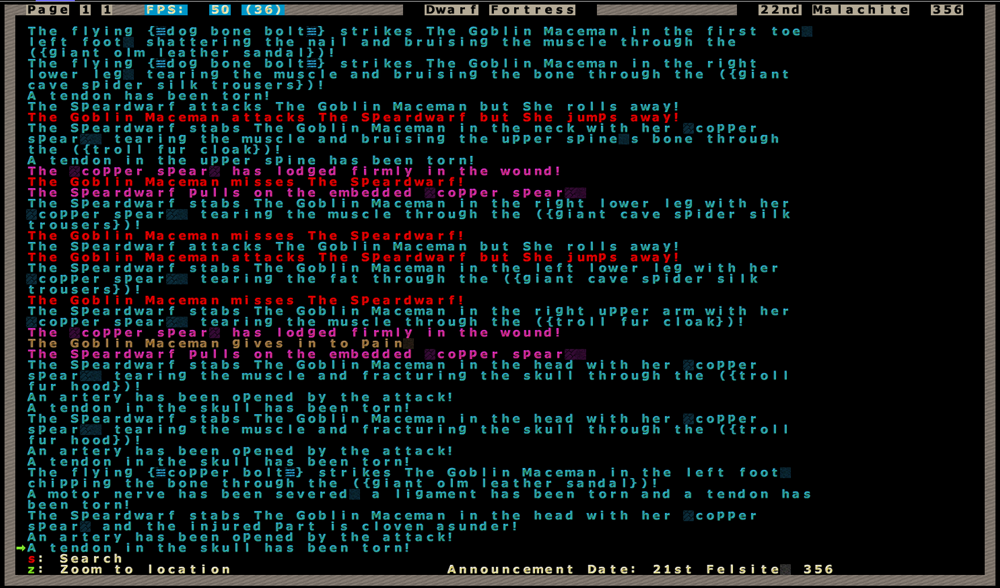

![[fr] Dwarf Fortress](../images/df/df.jpg)
[fr] Dwarf Fortress
Dwarf Fortress
 (xkcd)
J'ai toujours aimé les jeux de gestion. J'étais bien intrigué le jour ou j'ai découvert Dwarf Fortress, a priori source d'inspiration de Markus Persson lors de l'élaboration du célèbre Minecraft.
Avec le recul, ces deux jeux ont en commun la génération procédurale de la surface jouable, et surtout, l'absence d'objectif particulier.
Pour en revenir à notre sujet principal, Dwarf Fortress vous plonge dans une civilisation naine dont vous contrôlez la destinée. Même si je parlais d'absence d'objectif, il faut quand même satisfaire/maintenir en vie vos nains. Et pourquoi ne pas réaliser vos rêves ? Une forteresse hors du sol ? Industrialiser la mise à mort de vos assaillants ? Organiser des combats épiques entre des monstres légendaires et des gobelins dans une arène ? Faire fortune dans la vente et l'élevage d'esclaves ? Ça ne tient qu'à vous !
Une bonne partie du contenu est générée aléatoirement - Dwarf Fortress demeure une référence dans le genre procédural. Cela va du terrain aux attributs des différentes créatures que vous aurez la chance de rencontrer.
Ainsi, vos nains se spécialisent petit à petit avec l'augmentation générale de la population, et la diversification des tâches à effectuer pour aller plus loin dans les possibilités offertes par le jeu. Assurez-vous, au niveau possibilités offertes par le jeu, (quasiment) n'importe quel autre jeu se retrouve relégué au rang de Candy Crush.
Sans pour autant être un jeu "textuel", Dwarf Fortress s'appuie en partie sur l'imagination du joueur dans pas mal de situations - profitant de la génération procédurale poussée à l'extrême, cela permet un très haut niveau de détail. Cela est particulièrement vrai avec les créatures de toutes sortes. On notera des détails ahurissants dans les descriptions, et qui peuvent (et vont !) impacter le gameplay.
Afin de rendre l'expérience plus simple visuellement, j'ai pris l'habitude de jouer avec le tileset IronHand, afin de bénéficier de petites images à la place des caractères.
Gameplay
Je fais référence au mode de jeu "Dwarf Fortress" pour tout le reste de l'article
On distingue deux types d'actions qui vous permettent d'agir sur votre forteresse et en influencer l'évolution:
- Les désignations
- Les tâches
Les désignations (d) permettent de marquer une case pour y effectuer une action. Par exemple, on peut délimiter
une zone à miner via le menu designations (d-d). Le curseur change alors d'apparence, et on peut marquer deux coins
d'un rectangle en validant avec la touche entrée (⌤).
Concrètement, vous pouvez désigner des lieux et donner des ordres pour faire accomplir des tâches plus ou moins complexes à vos nains (de "creuser un trou" à la mise en place de mécanismes impliquant des barrages hydrauliques et des plaques de pression)
Les tâches sont plus générales, et peuvent être commandées dans des bâtiments dédiés ou bien ordonnées de façon automatique.
Par exemple, récolter des parcelles de culture arrivées à maturation sera ordonné automatiquement et effectué par un nain possédant la compétence adéquate. De la même façon, si les conditions sont réunies (canne, compétence, cours d'eau) un pêcheur ira pêcher sans qu'on lui ordonne.
Partie type
On commence par générer le "monde". Des longues minutes durant lesquelles un monde est généré, avec une histoire propre à ce dernier.
Il se peut par exemple que les elfes soient neutres (ils cherchent habituellement le conflit), voire éteins (!!!). Ces paramètres influent la diplomatie dans le monde nouvellement créée.
Après vient le moment de choisir un endroit sur la carte (de préférence un minimum accueillant), un peu d'équipement, et c'est parti. En général, on met le jeu en pause (espace) pour avoir le temps d'inspecter les environs et d'ordonner de commencer à creuser.
Les premières parties peuvent être frustrantes, le jeu paraît compliqué au premiers abords. Puis vient une phase où vous commencez à prospérer, et expérimenter des nouvelles choses (l'eau coule, la noyade tue, par exemple, s'apprennent souvent au péril d'une forteresse). C'est un peu comme un apprentissage permanent.
Ça fait bien plusieurs années que j'y joue, et j'y découvre sans cesse de nouvelles choses (comme utiliser un vampire enchainé comme chien de garde/leurre).
Interactions
Énormément de facteurs sont constamment pris en compte. Les combats (comme le reste) sont aussi d'un niveau de détails très élevé.
On ne dirait pas comme ça, mais le nain violet ci-dessus est un vampire, ancien maire, bloqué dans sa luxueuse chambre depuis plusieurs années.
Les nains :
- ont une histoire
- des liens de parenté avec d'autres nains
- des liens d'amitié/haine avec d'autres nains
- doivent manger et boire (de la bière de préférence !)
- sont sensibles sur le plan émotionnel (~120 émotions différentes)
- ont une personnalité
- peuvent posséder des objets
- peuvent posséder des pièces/chambres
- possèdent des attributs physiques (comme toute créature de Dwarf Fortress)
- des compétences intellectuelles
- apprennent et évoluent dans leur(s) domaine(s)
- ...
J'ai tenté de décrire les nains, mais c'est à peu près aussi complet pour tout et n'importe quoi.
Le wiki parle de lui-même. Regardez la page des "antman" (hommes fourmis) sur le dwarffortresswiki
Despite their name, all antmen are female
Oubliez tout ce que vous connaissez dans le jeu vidéo. On peut parler de Dwarf Fortress like, mais honnêtement, je ne vois aucun jeu s'en rapprochant, et surtout, qui gère des interactions avec autant de détails. Quand on mélange tout ça, avec une centaine de nains, le moindre évènement inattendu peut initier une série de WTF.
Un petit-peu de WTF
Ça, c'est l'histoire d'un pêcheur que j'ai enrôlé (de force) et que j'ai entrainé pendant des années. Le jour ou je le fais sortir de sa salle d'entrainement (qu'il n'a pas quitté depuis), il se saisi de sa canne et va pêcher. La suite, c'est un ...lézard-garou (werelizard) qui l'attaque. Résultat: il le défonce.
En règle générale, dans DF, il vaut mieux craindre les *-garous, (were-animals>), ils ont tendance à contaminer votre population, et ça mène assez vite à un peu plus de fun. Celui-ci n'a pas fait long feu.
On se souviendra de ses paroles après ce massacre :
Death is all around us. I am not upset by this
L'entrée de la forteresse après un assaut de gobelins assez soutenu. On remarquera le sang, les cadavres ('g') et les nombreux items au sol, au niveau du rempart Est. Nos soldats se trouvent en haut (et viennent de dérouiller sévère)
Les cages visibles sont des pièges ayant fonctionnés et qui contiennent des gobelins vivants, avec lesquels on organise des petites "fêtes" dans une arène dédiée (et j'entraine mes soldats avec ces cibles vivantes, c'est plus divertissant & prolifique)

Un log de combat assez violent entre un nain (lancier - spreadwarf) et un gobelin durant le siège visible ci-dessus
L'intérieur de la fortresse - des salles communes, et quelques ateliers en bas à droite. La salle la plus à gauche est l'infirmerie.
Bref, n'hésitez pas à vous plonger dans ce vaste univers. Perso, j'utilise lnp pour avoir un large choix de tilesets.
Vous trouverez le site de Bay12Games, l'éditeur de dwarf fortress ici.